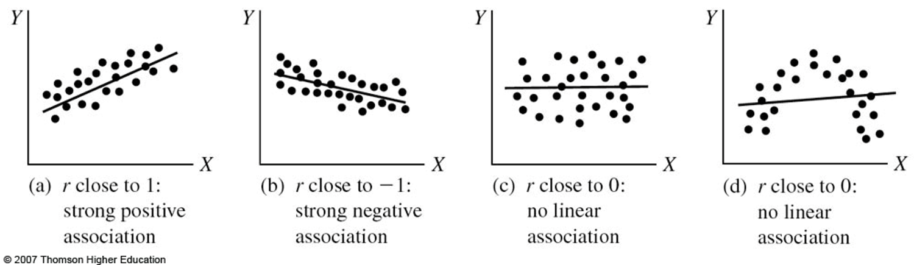
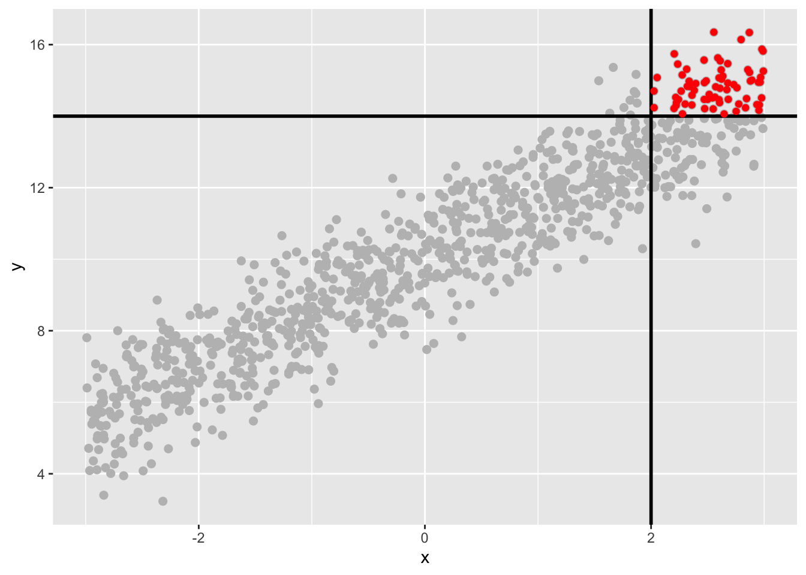

library(rio); library(psych); library(Hmisc); library(ggplot2); library(reshape2)3 Correlation
3.1 Variance and Covariance
Statistical techniques are used to help explain the variation in variables. Variance is an expression that indicates the amount of spread or dispersion of scores in a distribution. Variance is the average of the squared deviations around the mean.
Researchers are typically interested in the covariation among variables (e.g., What happens to the likelihood of success in a graduate program as students’ IQs vary?; What happens to high school drop out rate as parental income varies?). How do two variables co-vary with each other?
Recall the formula for Variance:
\[\text{VAR}=s_{x}^{2}\ =\frac{\sum\limits_{i=1}^{N}{{{({{X}_{i}}-\bar{X})}^{2}}}}{N-1}=\frac{\sum{{{x}^{2}}}}{N-1}=\frac{\sum\limits_{i=1}^{N}{({{X}_{i}}-\bar{X})({{X}_{i}}-\bar{X})}}{N-1}\]
Variance of a variable can be thought of as its covariance with itself. Covariation of a set of scores from its mean. \[\text{Covariance}={{s}_{xy}}=\frac{\sum\limits_{i=1}^{N}{({{X}_{i}}-\bar{X})({{Y}_{i}}-\bar{Y})}}{N-1}=\frac{\sum{xy}}{N-1}\]
Covariation of 2 sets of scores from their respective means.
The covariance of X and Y scores may be expressed independently of their respective standard deviations by dividing by the product of their respective standard deviations. This standardizes the deviation scores and puts them on the same scale with the same standard deviation. This places the covariance of X and Y on a scale from -1.0 to +1.0 and gives us an index of the relationship between X and Y that is not affected by the differences in the individual variability of X and Y. This index is the Pearson Product-Moment Correlation:
\[{{r}_{xy}}=\frac{\sum\limits_{i=1}^{N}{({{X}_{i}}-\bar{X})({{Y}_{i}}-\bar{Y})/(N-1)}}{{{s}_{x}}{{s}_{y}}}=\frac{\sum{xy/(N-1)}}{{{s}_{x}}{{s}_{y}}}\] where \(x=(X-\bar{X})\) and \(y=(Y-\bar{Y})\); and \({{s}_{x}}\) and \({{s}_{y}}=\) the standard deviation of X and Y, respectively.
3.2 Pearson Product-Moment Correlation (Pearson Correlation)
An index that measures on a scale from -1.0 to +1.0 the degree to which two groups of scores are related. Expressed as a proportion of the maximum amount of variation possible that is due to the association of X and Y.
\[{{r}_{xy}}=\frac{\sum\limits_{i=1}^{N}{({{X}_{i}}-\bar{X})({{Y}_{i}}-\bar{Y})/(N-1)}}{{{s}_{x}}{{s}_{y}}}\]
| $X$ | $Y$ | $X-\bar X$ | $Y-\bar Y$ | $(X - \bar X)^2$ | $(Y - \bar Y)^2$ | $(X - \bar X)(Y - \bar Y)$ | |
|---|---|---|---|---|---|---|---|
| 1 | 1 | -3.57 | -2.86 | 12.74 | 8.18 | 10.21 | |
| 1 | 3 | -3.57 | -0.86 | 12.74 | 0.74 | 3.07 | |
| 3 | 2 | -1.57 | -1.86 | 2.46 | 3.46 | 2.92 | |
| 4 | 5 | -0.57 | 1.14 | 0.32 | 1.30 | -0.65 | |
| 6 | 4 | 1.43 | 0.14 | 2.04 | 0.02 | 0.20 | |
| 7 | 5 | 2.43 | 1.14 | 5.90 | 1.30 | 2.77 | |
| 10 | 7 | 5.43 | 3.14 | 29.48 | 9.86 | 17.05 | |
| $\Sigma$ | 32 | 27 | 0.01 | -0.02 | 65.68 | 24.86 | 35.57 |
\(\bar X = 4.57\), \(\bar Y = 3.86\), \(s_x = 3.31\), \(s_y = 2.03\)
\[{{r}_{xy}}=\frac{\sum\limits_{i=1}^{N}{({{X}_{i}}-\bar{X})({{Y}_{i}}-\bar{Y})/(N-1)}}{{{s}_{x}}{{s}_{y}}}=\frac{35.57/(7-1)}{(3.31)(2.03)}=\frac{5.93}{6.72}=.88\] ### How to describe a Pearson correlation?
Positive relationship: [As X increases, Y increases] OR [As X decreases, Y decreases]. Same direction of movement.
Negative relationship: [As X increases, Y decreases] OR [As X decreases, Y increases]. Opposite directions of movement.
Strength of the relationship between two variables is not represented by the sign of the correlation, but is represented by the absolute value of the correlation coefficient (i.e., 0 represents no relationship; the closer the correlation is to either -1.0 or +1.0, the stronger the relationship).
A correlation does not imply causation. A correlation only indicates that an association or a relationship between two variables exists.
For the Pearson Product-Moment Correlation to accurately reflect the correlation in the population, both X and Y must be continuous variables and normally distributed in the population.
3.2.1 Test that the population correlation equals zero
Null Hypothesis: \({{\rho }_{xy}}=0\)
Alternative Hypothesis: \({{\rho }_{xy}}\ne 0\).
Significance testing of the correlation coefficient can be done using several approaches.
t statistic: \(t=\frac{{{r}_{xy}}\sqrt{n-2}}{\sqrt{1-r_{xy}^{2}}}\) with df = n - 2.
Critical value at alpha = .05 obtained from Distribution of t Table: 2.571.(In R, use
qt(0.975, 5)). Our obtained t-value (4.19) is greater than the critical value (2.571), thus we reject the null that the correlation is equal to zero. There is a strong, positive, and significant relationship between the two variables, r(5) = .88, p < .05.Use Excel function T.DIST.2T to obtain the probability that we will observe a more extreme correlation coefficient than that from the data, if \({{\rho }_{xy}}=0\).
In Excel, type “=T.DIST.2T(4.19,5)” (without quotation marks) in an empty cell, and hit “Enter” on your keyboard. Excel will give a value of .008572, which is less than alpha = .05. (NOTE: in Excel 2007 or earlier versions, type “=TDIST(4.19,5,2)”)
x <- c(1, 1, 3, 4, 6, 7, 10)
y <- c(1, 3, 2, 5, 4, 5, 7)
cor.test(x,y)
Pearson's product-moment correlation
data: x and y
t = 4.1455, df = 5, p-value = 0.008949
alternative hypothesis: true correlation is not equal to 0
95 percent confidence interval:
0.3768242 0.9821977
sample estimates:
cor
0.8801279 3.2.2 Check normality
shapiro.test(x)
Shapiro-Wilk normality test
data: x
W = 0.93761, p-value = 0.6173shapiro.test(y)
Shapiro-Wilk normality test
data: y
W = 0.97777, p-value = 0.9483.2.3 Check for linearity with scatterplot
using plot()
plot(x,y)
abline(lm(y ~ x))
using ggplot()
df <- data.frame(x,y)
ggplot(data = df, mapping = aes(x = x, y = y)) +
geom_point(color = "red", size = 2) +
geom_smooth(method = "lm", se = FALSE)`geom_smooth()` using formula = 'y ~ x'

3.2.4 Factors that affect the Pearson Correlation
- Outliers
- Heterogeneous Subsamples
- Curvilinear Relationships
- Restriction of Range
Restriction of Range
Warning: Using `size` aesthetic for lines was deprecated in ggplot2 3.4.0.
ℹ Please use `linewidth` instead.
3.2.5 Test that the population correlation equals a certain value
Null Hypothesis: \({{\rho }_{xy}}={{\rho }_{0}}\), where \({{\rho }_{0}}\) is a specified value.
Alternative Hypothesis: \({{\rho }_{xy}}\ne {{\rho }_{0}}\).
Fisher’s Z transformation: \[{{z}_{r}}=\frac{1}{2}\ln \frac{1+r}{1-r}\]
\[\text{S}{{\text{E}}_{Z}}=\frac{1}{\sqrt{n-3}}\] \[z=\frac{z_{r}^{{}}-z_{{{\rho }_{0}}}^{{}}}{S{{E}_{z}}}\]
Example:
\[\begin{align} & {{r}_{xy}}=.66\quad \quad {{z}_{r}}=\frac{1}{2}\ln \frac{1+.66}{1-.66}=0.7928\quad \quad S{{E}_{z}}=\frac{1}{\sqrt{30-3}}=0.19245 \\ & {{\rho }_{0}}=.85\quad \quad z_{{{\rho }_{0}}}^{{}}=\frac{1}{2}\ln \frac{1+.85}{1-.85}=1.2562\quad \quad \\ \end{align}\]
\(z=\frac{0.7928-1.2562}{0.19245}=-2.41\) with a z critical value of \(\pm 1.96\) at alpha = .05.
The obtained z value (-2.41) exceeds the critical two-tailed z value (1.96) at alpha = .05 (In R, use qnorm(0.975)), thus, we reject the null that the population correlation is equal to .85.
Confidence interval for \({{\rho }_{xy}}\) Obtain 100(1-α)% confidence interval for the Fisher’s Z transformed parameter:
\[{{z}_{r}}\pm {{z}_{1-\alpha /2}}\text{S}{{\text{E}}_{z}}=0.7928\pm 1.96*0.19245\] which is (0.416, 1.170).
Transfer Fisher’s Z statistics to correlations
\[{{L}_{\rho }}=\frac{{{e}^{2{{L}_{z}}}}-1}{{{e}^{2{{L}_{z}}}}+1}=\frac{{{e}^{2(0.416)}}-1}{{{e}^{2(0.416)}}+1}=0.394\]
\[{{U}_{\rho }}=\frac{{{e}^{2{{U}_{z}}}}-1}{{{e}^{2{{U}_{z}}}}+1}=\frac{{{e}^{2(1.170)}}-1}{{{e}^{2(1.170)}}+1}=0.824\]
The 95% confidence interval for \({{\rho }_{xy}}\) is (0.394, 0.824)
n <- 30
r <- .66
rho <- .85
pnorm(fisherz(r), mean = fisherz(rho), sd = 1/sqrt(n-3)) * 2 # two-sided p value[1] 0.0160586r.test(n = 30, .66) # Is the population correlation significantly different from 0?Correlation tests
Call:r.test(n = 30, r12 = 0.66)
Test of significance of a correlation
t value 4.65 with probability < 7.2e-05
and confidence interval 0.39 0.823.2.6 Test that two population correlations are equal
Null Hypothesis: \({{\rho }_{1}}-{{\rho }_{2}}=0\) OR \({{\rho }_{1}}={{\rho }_{2}}\)
Alternative Hypothesis: \({{\rho }_{1}}-{{\rho }_{2}}\ne 0\) OR \({{\rho }_{1}}\ne {{\rho }_{2}}\)
Example:
Male: n = 86, \(r_{xy} = .75\), \(z_{xy} = .973\)
Female: n = 95, \(r_{xy} = .82\), \(z_{xy} = 1.157\)
\[z=\frac{z_{m}^{{}}-z_{f}^{{}}}{\sqrt{1/({{n}_{m}}-3)+1/({{n}_{f}}-3)}}=\frac{.973-1.157}{\sqrt{1/(86-3)+1/(95-3)}}=-1.21\]
The obtained z value does not exceed the z critical value of \(\pm1.96\), thus, we fail to reject the null that the population correlations are equal.
r12 <- .75
r34 <- .82
n1 <- 86
n2 <- 95
r.test(n = n1, r12 = r12, r34 = r34, n2 = n2)Correlation tests
Call:r.test(n = n1, r12 = r12, r34 = r34, n2 = n2)
Test of difference between two independent correlations
z value 1.21 with probability 0.223.3 Variations of the Pearson Product-Moment Correlation
- Point Biserial Correlation
- Biserial Correlation
- Spearman Rank
- Phi Coefficient
- Tetrachoric Correlation
- Polychoric Correlation
- Chi-Square
- Pearson’s Chi-Square
3.3.1 Point Biserial Correlation
Used to assess the relationship between two variables when one variable is at the interval/ratio level of measurement and the 2nd variable is dichotomous (true dichotomy: male vs. female; first born vs. last born; mammal vs. non-mammal).
Example: Student’s total test score and a single item from another test that is scored right or wrong. Code the dichotomous variable as 0 (e.g., wrong) or 1 (e.g., right) and calculate the Pearson product-moment correlation.
\[{{r}_{pb}}=\frac{({{{\bar{Y}}}_{1}}-{{{\bar{Y}}}_{0}})\sqrt{PQ}}{{{s}_{Y}}}\]
where - \({\bar Y_1}\) is the mean of Y scores for those coded as 1
\({\bar Y_0}\) is the mean of Y scores for those coded as 0
\(P\) is the mean of the X(0,1) coded scores.
\(Q=1-P\)
\(s_Y\) is the standard deviation of the Y(continuous) scores with n in the denominator instead of n-1.
Significance testing of the point biserial correlation
\(t=\frac{{{r}_{pb}}\sqrt{n-2}}{\sqrt{1-r_{pb}^{2}}}\) with df = n-2.
Sign of the correlation depends on whether the group with the higher mean on Y was assigned a low (0) or high (1) coding.
The point biserial correlation is mathematically equivalent to the Pearson correlation between a continuous and a dichotomous variable.
x <- c(65, 58, 52, 49, 57, 58) # total test score
y <- rep(c(0,1),each = 3) # item score
cor.test(x,y)
Pearson's product-moment correlation
data: x and y
t = -0.77782, df = 4, p-value = 0.4801
alternative hypothesis: true correlation is not equal to 0
95 percent confidence interval:
-0.9071701 0.6362620
sample estimates:
cor
-0.3624623 A negative correlation means that those that got the item wrong tended to perform better on the test. Weird item!
3.3.2 Biserial Correlation
Used to assess the relationship between two variables when one variable is at the interval/ratio level of measurement and the 2nd variable is a continuous dichotomy (not a true dichotomy, but a forced dichotomy).
Example: Scores on an achievement test and IQ score coded as low or high.
\({{r}_{b}}=\frac{({{{\bar{Y}}}_{1}}-{{{\bar{Y}}}_{0}})PQ}{h({{s}_{Y}})}={{r}_{pb}}\frac{\sqrt{PQ}}{h}\)
where h is the height of the standard normal curve at which its area is divided into P and Q portions.
Sign of the correlation depends on whether the group with the higher mean on Y was assigned a low (0) or high (1) coding.
The biserial correlation may be taken as an estimate of the Pearson product-moment correlation that would have been obtained if the X variable was continuous with a normal distribution.
The biserial will always exceed the corresponding point biserial correlation.
x <- c(65, 58, 52, 49, 57, 58) # achievement test score
y <- rep(c(0,1),each = 3) # IQ score coded as low or high
biserial(x,y) [,1]
[1,] -0.4146982A negative correlation means that those with higher IQ scores tended to have lower achievement test score. Weird!
3.3.3 Spearman’s Rank/Spearman’s Correlation/Spearman’s rho
Nonparametric version of the Pearson product-moment correlation. Based on the ranks of the data rather than the actual values.
- Both variables are ranked variables. - Used with ordinal data or interval data with non-normal distributions. - Sign of the coefficient indicates direction of the relationship.
\({{r}_{s}}=1-\frac{6\sum{{{d}^{2}}}}{n({{n}^{2}}-1)}\), where d is the difference in ranks of the pair for an object or individual and n is the sample size.
• Significance testing of the correlation coefficient:
\(t=\frac{{{r}_{s}}\sqrt{n-2}}{\sqrt{1-r_{s}^{2}}}\) with df = n -2.
x <- c(3, 4, 5, 10, 13)
y <- c(12, 5, 6, 4, 3)
corr.test(x, y, method = "spearman")Call:corr.test(x = x, y = y, method = "spearman")
Correlation matrix
[1] -0.9
Sample Size
[1] 5
These are the unadjusted probability values.
The probability values adjusted for multiple tests are in the p.adj object.
[1] 0.04
To see confidence intervals of the correlations, print with the short=FALSE option3.3.4 Phi Coefficient
Used to assess the relationship between two variables when both are true dichotomous variables.
Example: Gender (male vs. female) and performance on a test item (right vs. wrong).
If the 0, 1 coding is arbitrary, the sign of the Phi coefficient is meaningless.
You can use Phi, but it is more common to use the chi-square statistic which tests the association between 2 variables. However, chi-square does not work well when using small samples.
The phi coefficient is mathematically equivalent to the Pearson correlation between two dichotomous variables.
gender <- rep(c(0,1), each = 7)
item <- c(0,0,0,1,1,1,1,0,0,1,1,1,1,1)
corr.test(gender,item)Call:corr.test(x = gender, y = item)
Correlation matrix
[1] 0.15
Sample Size
[1] 14
These are the unadjusted probability values.
The probability values adjusted for multiple tests are in the p.adj object.
[1] 0.61
To see confidence intervals of the correlations, print with the short=FALSE option| Male/Incorrect | Female/Incorrect |
| A, 3 | B, 2 |
| Male/Correct | Female/Correct |
| C, 4 | D, 5 |
\[{{r}_{\varphi }}=\frac{BC-AD}{\sqrt{(A+B)(C+D)(A+C)(B+D)}}\]
\[t=\frac{{{r}_{xy}}\sqrt{n-2}}{\sqrt{1-r_{xy}^{2}}}\] with df = n -2.
phi(c(3,2,4,5))[1] 0.15There is a weak, positive, and non-significant relationship between gender and performance on a test item. \({{r}_{\varphi }} = .149\), p = .61.
3.3.5 Tetrachoric Correlation
Used to assess the relationship between two variables when both are dichotomous (not a true dichotomy, but a forced dichotomy).
Example: IQ scores (low vs. high) and GPA (low vs. high).
Assume the underlying distributions of the variables are normally distributed.
Use the tetrachoric() function of the psych package.
3.3.6 Polychoric Correlation
Used to assess the relationship between two variables when both are ordered (ordinal; ranked) categories (forced categories).
Example: IQ scores (low, medium, high) and GPA (low, medium, high).
Assume the underlying distributions of the variables are normally distributed.
Use the polychoric() function of the psych package.
3.3.7 Chi-Square
Tests the hypothesis that two categorical variables are independent, without indicating strength or direction of the relationship.
- General Varieties:
- Pearson Chi-Square
- Likelihood-Ratio Chi-Square
- More varieties for 2 X 2 tables:
- Fisher’s exact test
- Yates’ corrected chi-square
They are for analysis of categorical data! (See Chapter 18 of the textbook.)
3.3.8 Summary of measures of association
| Correlation Coefficient | X Variable | Y Variable |
|---|---|---|
| Pearson product-moment | continuous | continuous |
| Point Biserial | continuous | true dichotomy |
| Biserial | continuous | forced dichotomy |
| Phi | true dichotomy | true dichotomy |
| Tetrachoric | forced dichotomy | forced dichotomy |
| Polychoric | forced polytomy | forced polytomy |
| Spearman's Rank | ranked | ranked |
| Pearson Chi-Square | categorical | categorical |
3.4 An Example
Check Section 2.2 for an example of basic data management and descriptive statistics including how to calculate Pearson correlations.